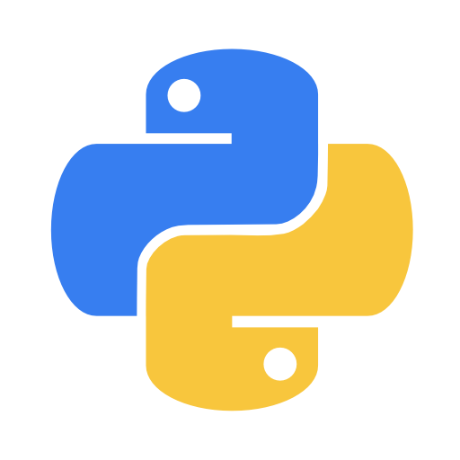

Hello, myself Arjun
and I am passionate about

Projects
AI Chatbot with Django
Developed a responsive AI chatbot using the Django framework, integrated with natural language
processing to understand and reply to user inputs. Implemented features like session tracking,
query handling, and dynamic response generation for an interactive experience.
Instagram Clone Web App
Designed and built a social media web application that replicates core Instagram functionalities
such as user registration, profile management, post uploads, like/comment systems, and a clean
UI. Technologies used include Django, HTML/CSS, and JavaScript..
Full-Stack E-commerce Website
Created a fully functional e-commerce platform with product catalog, shopping cart, payment
simulation, and admin dashboard. Ensured a smooth user experience with responsive design and
implemented backend logic for order and inventory management.
Video Editing – Gameplays & Reels
Edited high-quality gameplay videos and social media reels using tools like Adobe Premiere Pro
and CapCut. Focused on dynamic transitions, audio syncing, visual effects, and pacing to enhance
engagement across platforms like YouTube and Instagram.

Web Scraping & Data Automation
Built Python-based scripts using BeautifulSoup, Requests, and Selenium to scrape data from
various websites. Automated data collection, cleaning, and storage processes for use in
analytics dashboards and project pipelines.
DevOps & Cloud Deployment Projects
Gained hands-on experience with DevOps practices including Docker containerization, GitHub
Actions for CI/CD, and deploying applications on cloud platforms. Worked with version control,
environment management, and automated testing for efficient development workflows.